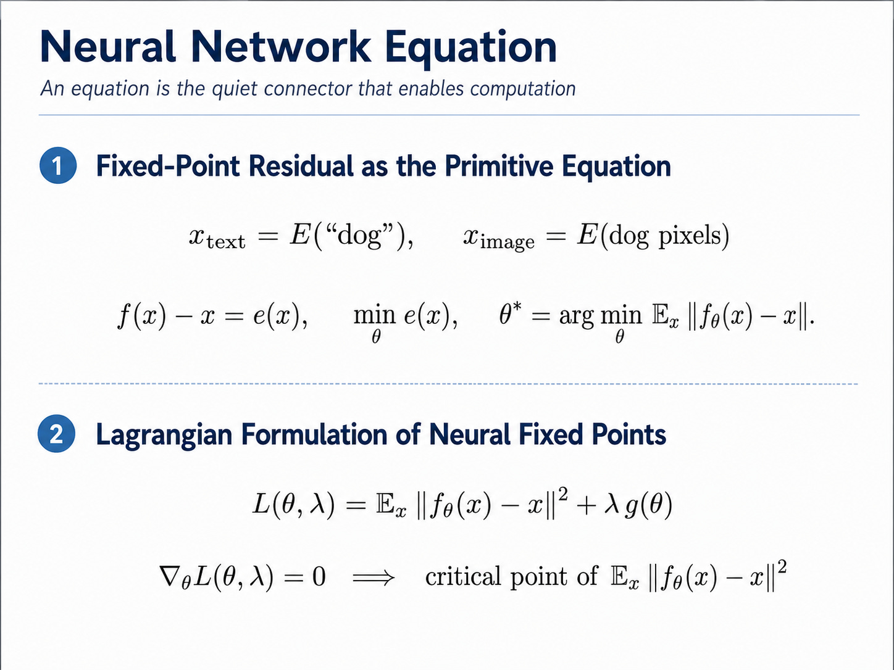
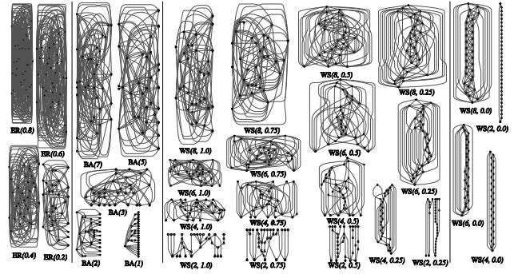
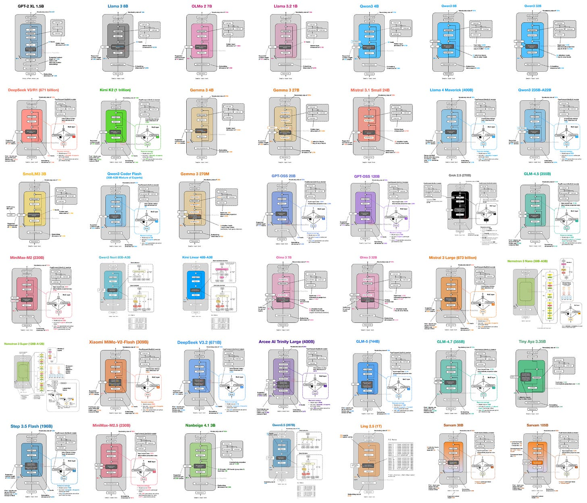
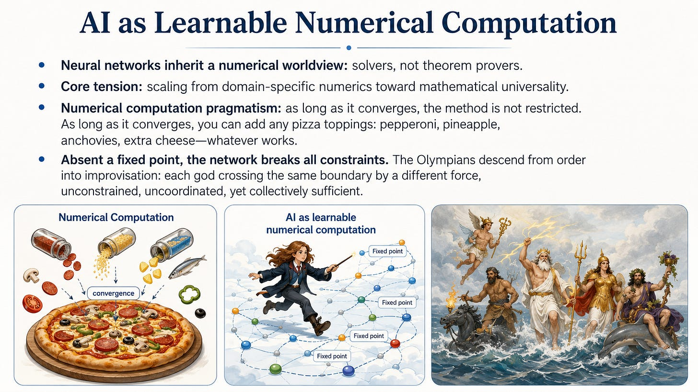

DEEP MANIFOLD · CONCEPTUAL ESSAY · 2026-03-27
为什么神经网络能容纳这么多架构？
常见答案是工程取舍：省内存、提速度、扩上下文。Deep Manifold 给出一个更底层的数学视角：架构不是神经方程之外的零件，而是限制系统如何学习的约束。
同一个可学习数值系统，可以被不同的 g(θ)=0 切出不同可行域；MHA、GQA、MLA、稀疏注意力与混合架构，因而可以被读成不同的约束实现，而不是彼此无关的发明。
问题：为什么现代神经网络会出现大量架构与注意力变体？
作者答案：学习目标负责减少固定点残差，架构与数据几何则通过约束项规定哪些参数、耦合、路径和变形可以存在。
适用边界：这是一种统一理解架构多样性的概念框架；原文没有给出具体注意力到约束函数的逐项构造，也没有做性能验证。
先把架构放回神经方程内部
文章从“神经固定点”的残差出发：系统希望让前向算子作用后的结果接近输入本身，再用拉格朗日项限制什么样的解是允许的。
fθ(x)−x 是固定点残差。训练寻找使残差变小的参数，让计算趋向稳定状态。
g(θ)=0 表示架构或数据约束。归一化、注意力结构、参数化与数据几何都可成为边界条件。
λ 让约束进入优化问题；作者据此把架构视为数学系统的一部分，而非训练前的外部包装。
公式按原文记法呈现；这里解释的是作者的概念映射，不额外推导新的定理。
注意力、路由、参数共享、稀疏性等结构规则先被确定。
系统允许的连接、耦合与参数变形不再相同。
训练能沿哪些内在路径收敛、哪些路径被阻断随之变化。
最终能抵达的稳定计算状态也会不同。

换一种架构，就是换一块可行域
作者的统一视角不是说所有架构都一样，而是说它们都在回答同一个问题：这套数值系统被允许怎样移动、耦合和计算？权重塑造前向算子的几何，约束则划定允许区域。
在 Deep Manifold 的表述中，训练也不是在一张静止、光滑的流形上找点，而是在不断移动、分片堆叠的流形上推进。架构变化会保留某些稳定路径，也会让另一些路径消失。
约束切换器
切换常见架构族，观察“可行域—路径—落点”的概念变化。
多头各自保留 Q、K、V 投影
约束变化：头之间的表示与缓存结构保持较高独立性。
作者视角：这规定了一类耦合方式与可达路径；它不是“无约束基线”，而是一个具体的约束实现。
图形只帮助理解文章的抽象关系，不表示真实损失面、参数数量、速度或质量排序。
两个支撑例子：搜索空间先被规定，多样性已经发生
原文引用两类材料来支撑这套读法。它们分别说明“架构空间并不中立”和“LLM 结构变体确实极其丰富”，但作者没有把它们包装成对拉格朗日解释的形式证明。
随机布线网络：搜索之前，生成器已经限定世界
《Exploring Randomly Wired Neural Networks for Image Recognition》把网络生成器定义为从参数空间到架构空间的映射。生成器决定计算图如何布线，因此架构搜索从来不是在“所有可能模型”中自由漫游。
文章把生成器读成 g(θ)=0 的一个具体化：它不是训练出的权重，而是学习开始前就规定允许动作与耦合的结构规则。
作用：机制类比，不是形式等价证明架构画廊：变体不是偶发噪声，而是系统性景观
Sebastian Raschka 的 LLM Architecture Gallery 与注意力综述把不同开放权重模型、主流注意力形式并置起来。原文还提到，文献中已有 70 多种注意力变体。
作者的解释是：当结构被视为约束实现时，大量变体正是预期现象——同一学习系统可以通过许多边界条件来组织计算。
作用：展示规模，不证明每种变体都有效

数值计算的本能：方法不神圣，收敛才重要
文章把神经网络放进数值计算传统中理解：它们天然更像可学习的求解器，而不是定理证明器。求解器的评价重点，是在约束下能否收敛、保持稳定并产生有用结果。
当计算被理解为“在边界条件下减少残差”，具体方法就不再神圣：注意力、路由、稀疏性与结构技巧，只要帮助系统抵达稳定且有效的计算，都可以被采用。
这是作者对“架构繁殖”的核心直觉：看似杂乱，其实是大规模数值实用主义。

真正释放多样性的，是“固定点没有被预先写死”
灵活性也带来文章最重要的张力。经典数值计算通常有已知控制方程和明确固定点；神经网络的固定点却是从数据中学出的、分布式的，而且会随训练变化。
经典数值计算
控制方程通常已知，目标状态由物理或数学问题预先规定。求解器是在相对清楚的边界里寻找那个解。
可学习神经计算
固定点由数据几何与训练共同塑造，可以是分布式、动态的。系统不被锁在一条计算路径上，因此多种结构实现可以共存。
| 观察维度 | 已知方程的求解器 | 神经网络 |
|---|---|---|
| 控制规律 | 通常显式给定 | 部分由数据与训练隐式形成 |
| 固定点 | 相对明确、问题先验强 | 学习得到、分布式、可能动态 |
| 计算路径 | 围绕已知问题设计 | 可在架构约束内探索多条路径 |
| 架构多样性 | 方法受问题结构强约束 | 只要促进稳定有效计算，多种实现都可能成立 |
于是，架构丰富性不再只是“工程师发明了很多技巧”，而是“一个没有完全预设控制定律的可学习求解器，天然允许许多结构化求解路径”。
这套视角解释了什么，又没有证明什么
把概念框架和实证结论分开，才能正确使用这篇文章。它最有价值的地方是改变提问方式，而不是给出一种新的架构排行榜。
为什么架构可以进入学习问题的数学表述：结构规则决定可行域，而不是只在方程外提供工程便利。
不同注意力、路由与参数化可以被放在同一坐标系里比较：它们分别允许什么耦合、路径和稳定状态。
从 MHA、GQA、MLA 或稀疏注意力到具体 g(θ) 的严格构造，也没有证明这种映射唯一；下一节是本页依据原始论文补充的一种一致写法。
哪种约束更快、更省内存或性能更高。随机布线论文与架构画廊在原文中是支撑性例子，不是该主张的对照实验。
读完后最值得带走的问题：面对一种新架构，不只问“它用了什么模块”，还要问“它把哪些计算路径打开或关闭？它允许哪些变形？它让哪些稳定状态变得可达？”
具体架构如何写成约束函数
最稳妥的严格化，不是先猜一个光滑标量函数，而是先说明“采用架构 A 时，哪些参数与计算图是可行的”。约束函数只是这个可行集的一种编码。
统一定义：先有可行集，再有约束函数
令 φ 表示一个足够大的“超网络”描述：它既可以包含连续权重，也可以包含注意力掩码、头分组和层类型等离散变量。架构 A 定义可行集 𝓕A。对闭可行集，一种总是成立的精确编码是：
因此，“架构是约束”严格地说是：训练只能在 𝓕A 内移动。下面的参数共享、低秩、固定支持集和整数选择，都是把不同 𝓕A 写出来的方法。
| 约束类型 | 典型等式 | 它关闭了什么自由度 |
|---|---|---|
| 参数共享 | Wᵢ − Wⱼ = 0 | 原本独立的头或模块必须使用同一参数。 |
| 固定支持集 | A ⊙ (1 − S) = 0 | 掩码之外的 token 交互被精确禁止。 |
| 低秩因子化 | rank(B) ≤ r | 表示只能经过至多 r 维的共享潜在通道。 |
| 离散结构选择 | zₐ ∈ {0,1}, Σzₐ = 1 | 每层只能选择规定集合中的一种算子。 |
约束对象：计算图必须分解成 H 个并行点积注意力头
对输入 X，标准多头注意力要求每个头分别生成 Q、K、V，头输出拼接后再经过输出投影。若环境空间是任意 token mixer，那么“能否写成下面这种分解”本身就是架构约束。
精确含义：𝓕MHA 是所有可按上述 H 头分解实现的算子集合，因而可写成 gMHA = dist²。在已经直接以 MHA 参数化的模型里，这个约束是“按构造满足”的，不需要额外罚项。
Attention Is All You Need · §3.2.2 ↗约束对象：多个 query 头必须共享同一组 K、V 参数
令 H 个 query 头被映射到 G 个 key-value 组，分组函数为 π:{1…H}→{1…G}。在更大的 MHA 参数空间里，GQA 可由参数绑定精确写出：
两个端点：当 G=H, π(h)=h 时退化为 MHA；当 G=1 时是 Multi-Query Attention。严格约束的核心不是“组数”这个标签，而是 K、V 投影之间的等式共享关系。
GQA: Training Generalized Multi-Query Transformer Models ↗约束对象：K、V 的内容分支必须经过共享低维潜在表示
抽取 DeepSeek-V2 MLA 的联合 KV 压缩核心，令潜在维度 d_c 小于原始表示维度：
这等价于要求内容键和值共享左因子 C，因此拼接矩阵的秩受到限制：
适用范围：这是 MLA 联合低秩压缩的精确核心，但不是完整 MLA。DeepSeek-V2 还把 RoPE 的位置相关 key 与内容分支解耦；完整可行集还应加入那部分计算图关系。
DeepSeek-V2 · Multi-Head Latent Attention ↗约束对象：注意力矩阵只能在预先规定的支持集上非零
令二值矩阵 S∈{0,1}ⁿˣⁿ 表示允许的 token 连接。把不允许的位置在 logits 中设为负无穷：
其等价支持集约束是：
精确含义：这不是让某些权重“倾向于变小”，而是把掩码外的交互从可行计算图中删除。固定步长、局部窗口、全局 token 等模式，对应不同的 S。
Generating Long Sequences with Sparse Transformers ↗约束对象：每层从有限算子集合中选择一种，并满足排列或比例规则
令 zℓ,a 表示第 ℓ 层是否选择算子 a，例如 attention、SSM 或 MoE：
若把 z 暂时看作实数，二值与 one-hot 条件可编码为：
固定 attention 层比例时，还可加入 (Σℓzℓ,attn−rL)²=0。Jamba 这类交错 Transformer–Mamba 架构，本质上定义的是一个带离散层类型和排列规则的混合整数可行集。
Jamba: A Hybrid Transformer-Mamba Language Model ↗